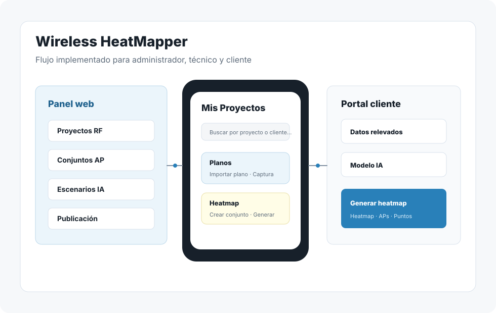
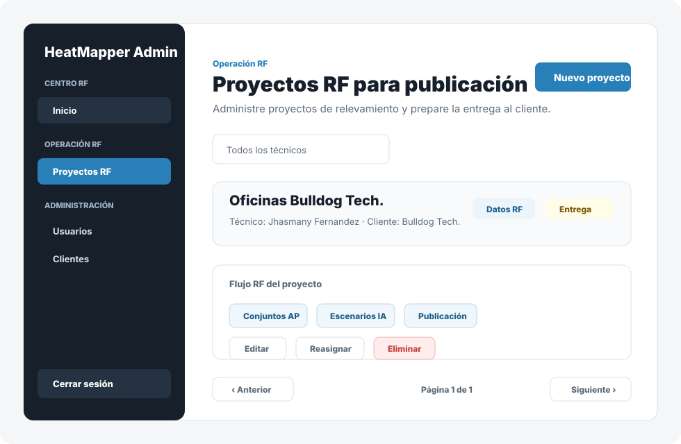
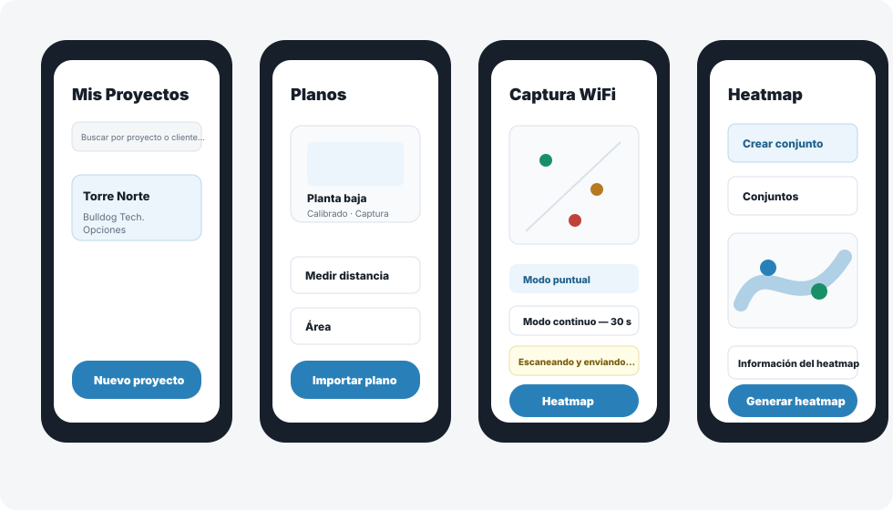
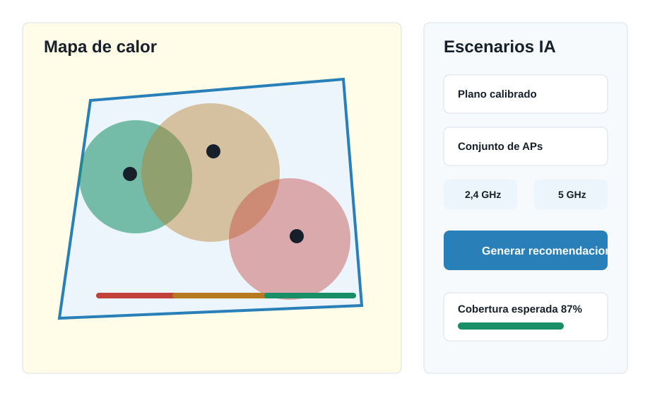
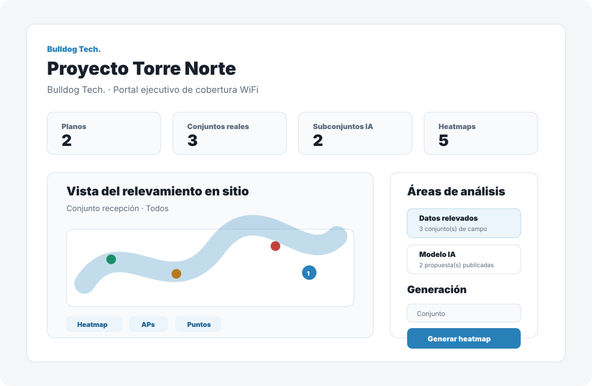

Administrador web
Ingresa al panel de administracion para gestionar usuarios, clientes, proyectos, conjuntos de APs, escenarios IA y enlaces publicados.
Flujo del administradorBulldog Tech. · Modalidad en linea
Esta guia explica las funciones disponibles en la aplicacion web, la app movil Android y el portal para clientes. El contenido se organiza segun las pantallas y flujos existentes en el codigo.

Acceso al sistema
Cada perfil ve un flujo distinto. Use esta seccion para ubicar rapidamente que parte del sistema corresponde a cada usuario.
Ingresa al panel de administracion para gestionar usuarios, clientes, proyectos, conjuntos de APs, escenarios IA y enlaces publicados.
Flujo del administradorUsa la app Android para autenticarse, administrar sus proyectos, importar planos, calibrarlos, capturar puntos WiFi y consultar heatmaps.
Flujo del tecnicoAccede mediante una URL generada por el administrador para ver resultados publicados, explorar heatmaps y descargar reporte si esta disponible.
Flujo del clientePanel web
El panel organiza la operacion RF, la administracion de cuentas y la publicacion de resultados desde una SPA React.

Entre por /admin/login con una cuenta de rol administrador. Si la sesion no es valida, el sistema redirige al login.
La pantalla de inicio resume proyectos totales, proyectos activos, puntos WiFi capturados, tecnicos y clientes activos. Tambien muestra relevamientos recientes y accesos directos.
Desde Usuarios puede crear tecnicos, editar datos de usuarios existentes y activar o desactivar cuentas. La cuenta propia no se puede desactivar desde la misma sesion.
Desde Clientes puede registrar, editar, activar y desactivar clientes. El correo de referencia se usa cuando se envia un enlace de portal cliente.
En Pipeline de proyectos puede crear o editar proyectos, asignar cliente, seleccionar tecnico responsable, cambiar estado, filtrar por estado o tecnico, reasignar, archivar y eliminar cuando el backend lo permite.

App Android
La app movil funciona como cliente en linea. Las operaciones de dominio consultan y guardan datos en el backend.
El tecnico inicia sesion con correo y contrasena. Al cerrar sesion se eliminan las credenciales locales de acceso.
La pantalla Mis Proyectos permite buscar por proyecto o cliente, refrescar la lista, crear nuevos proyectos, editar, archivar y eliminar segun permisos del backend.
Dentro de un proyecto el tecnico abre la lista de planos, importa imagenes y entra al editor del plano seleccionado.
En el editor se marcan dos puntos del plano y se registra la distancia real. El modo regla permite medir distancias cuando el plano ya esta calibrado.
El tecnico traza un poligono de al menos tres vertices. Este requisito bloquea la visualizacion del heatmap si no esta guardado.
Sobre el plano se marcan puntos de medicion. Cada punto guarda lecturas WiFi, permite ver detalle y admite modo continuo con intervalo para acumular lecturas sobre la misma posicion.
Analisis RF
El sistema permite pasar de mediciones de campo a mapas de calor, analisis de cobertura y recomendaciones optimizadas.

Desde la app se genera un heatmap para el plano seleccionado, con IDW y resolucion configurable. El tecnico puede filtrar por AP, ver puntos de lectura y consultar analisis.
El tecnico puede crear, editar y eliminar conjuntos de APs en la app. En la web, el administrador revisa conjuntos por origen movil, web o IA y decide cuales compartir con el cliente.
En el flujo de heatmap se pueden seleccionar APs de interes, confirmar ubicaciones estimadas y ajustar posiciones sobre el plano antes de generar resultados.
En la web se elige un plano calibrado, un conjunto de entrada, bandas 2,4/5 GHz, umbral RSSI objetivo, resolucion y cantidad de recomendaciones. Luego se generan escenarios IA.
Los escenarios pueden revisarse, aprobarse internamente, publicarse para cliente, descartarse o eliminarse. Tambien se agrupan por fuente para facilitar limpieza y revision.
La pantalla de escenarios incluye consulta de comparacion para revisar cobertura actual frente a la cobertura recomendada por la IA cuando existe un escenario seleccionado.

Entrega al cliente
El portal es una ruta publica por token. El administrador decide que conjuntos publicar y por cuanto tiempo estara vigente el acceso.
En Publicacion al cliente seleccione conjuntos ya publicados para cliente, defina vigencia de 1, 7, 30 o 90 dias y genere la URL.
Si el cliente tiene correo de referencia, el enlace puede enviarse desde el sistema cuando el correo esta configurado. Si no, se genera y se copia para compartirlo manualmente.
La web muestra enlaces generados, accesos acumulados, fecha de vencimiento y cantidad de conjuntos incluidos. Cada enlace puede copiarse, abrirse, revocarse o reactivarse.
El cliente visualiza metricas, alterna entre datos relevados e IA, selecciona conjunto, genera heatmap por AP individual, subconjunto o conjunto completo y descarga reporte si existe.
Uso correcto
Estas reglas ayudan a evitar errores durante una demo o uso real del sistema.
La app movil opera en linea. Si el backend no esta disponible, las operaciones de autenticacion, proyectos, planos, mediciones y heatmaps pueden fallar.
Para ver heatmaps se requiere plano calibrado, mediciones suficientes y poligono de interes cerrado con al menos tres vertices.
La generacion IA desde web requiere plano calibrado y conjunto de APs existente. Los resultados nacen como internos y deben publicarse deliberadamente.
El portal cliente depende de un token vigente. Un enlace revocado, vencido o inexistente muestra estado no disponible.